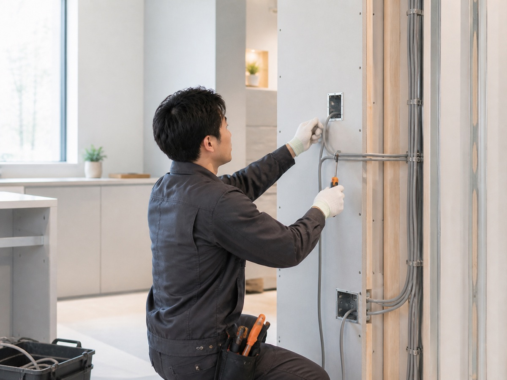
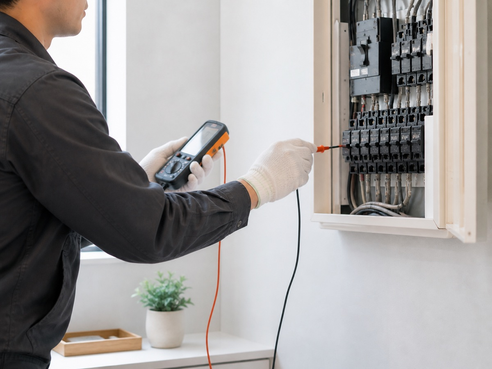

住宅・店舗の電気工事
照明、コンセント、分電盤まわりなど、暮らしや店舗運営に必要な電気設備を整えます。
照明 / コンセント / 分電盤Service
安全を第一に、確実な施工を。
小さな工事にも丁寧に向き合い、暮らしと店舗運営を支える電気設備を整えます。
照明、コンセント、分電盤まわりなど、暮らしや店舗運営に必要な電気設備を整えます。
照明 / コンセント / 分電盤
使い方の変化に合わせて、既存設備の見直しや増設を安全性に配慮して行います。
増設 / 改修 / レイアウト変更
不具合の原因を確認し、火災や事故につながるリスクを抑えるための対応を提案します。
不具合確認 / 安全点検